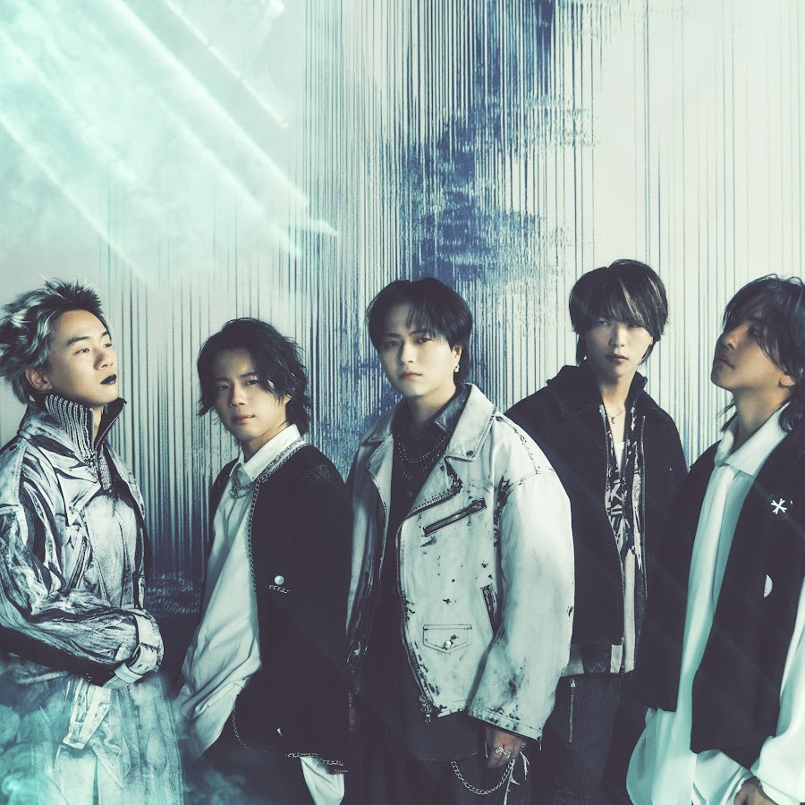

J-POP / ROCK
Novelbright
2026년 8월 1일(토) 오후 6:00, 2026년 8월 2일(일) 오후 6:00 · 킨텍스 제2전시장 10홀확인된 공연 일정
지난 공연 기록입니다. 일정과 예매 조건은 당시의 기록이며 현재 판매 상태를 나타내지 않습니다. 동일 시리즈에는 2회 공연 기록이 있습니다.
공연별 실제 예매 분석
공식 예매처 기준 · 마지막 확인 2026-08-12
회차별 시작 시각 비교
| 공연일 | 시작 시각 |
|---|---|
| 2026년 8월 1일(토) | 오후 6:00 |
| 2026년 8월 2일(일) | 오후 6:00 |
권종별 액면가: 스탠딩 VIP 220,000원 (최저 확인가보다 66,000원 높음) · 스탠딩 R 165,000원 (최저 확인가보다 11,000원 높음) · 스탠딩 S 154,000원 (최저 확인가) · 지정석 R 176,000원 (최저 확인가보다 22,000원 높음) · 지정석 S 165,000원 (최저 확인가보다 11,000원 높음)
권종 가격은 공연별 공식 예매 안내 기준입니다. 금액 차이만 비교했으며 등급별 좌석 위치·특전은 공식 상품 안내에서 확인되는 범위만 표시합니다.
- 선예매·일반예매 조건
- 별도 팬클럽 선예매는 공지되지 않았고 일반예매는 2026년 5월 13일 18시에 열렸습니다. 회차당 1인 4매, 스탠딩 VIP는 2매 제한입니다.
- 본인 확인
- 전 관객 본인 확인이 진행됩니다. 예매자 명의의 유효한 실물 신분증과 실물 티켓이 필요합니다.
- 티켓 수령·모바일 티켓
- 티켓은 2026년 7월 13일부터 일괄 배송됩니다. 현장 수령 대상자는 예매 상세의 수령 서류를 다시 확인해야 합니다.
- 취소표가 풀리는 방식
- 공식 취소 마감은 공연 전일 17시입니다. 무통장입금은 제한되며, 취소표가 다시 열리는 고정 시각은 공지되지 않았습니다.
아티스트 소개
힘 있는 보컬과 선명한 멜로디를 앞세운 일본 록 밴드입니다. 관객과 함께 호흡하는 대형 라이브에 강점이 있습니다.
Novelbright 아티스트 페이지 →공연장 교통 안내
GTX-A 킨텍스역과 버스를 이용할 수 있습니다. 전시장 내부 이동 거리가 길 수 있으므로 입장 게이트와 홀 번호를 확인하세요.
킨텍스 제2전시장 현장 가이드 보기 →교통편과 출입구는 당일 운영 상황에 따라 달라질 수 있습니다. 출발 전 주최사와 공연장 공지를 다시 확인하세요.
공연 당일 체크리스트
- 2026년 8월 1일(토) 오후 6:00 · 킨텍스 제2전시장 10홀의 입장구와 집합 시각은 당일 공식 공지를 확인하세요.
- 공연별 본인 확인·티켓 수령 조건은 위 예매 분석과 공식 예매처 안내가 최종 기준입니다.
- 최신 판매 상태와 관람 조건은 공식 예매처에서 다시 확인하세요. 예매 페이지의 최신 공지가 이 상세 기록보다 우선합니다. 공연 직전에는 날짜, 시작 시각, 입장 번호, 수령 장소와 재입장 가능 여부도 함께 확인하세요.
입문용 추천곡 3개
아래 Walking with you, 愛とか恋とか, seeker 순서는 J-LIVE의 입문용 추천 순서입니다. 각 곡은 공식 YouTube 영상으로 연결됩니다.
Novelbright 공연을 더 잘 즐기는 법
여일육 작성 · 편집·검증 기준 · 마지막 일정 검증 2026-07-20
이번 공연의 관전 포인트
Novelbright 공연의 핵심은 타케나카 유다이의 높고 선명한 보컬과 큰 후렴을 관객이 함께 완성하는 순간입니다. 음원에서 매끈하게 들리던 멜로디가 라이브에서는 드럼과 기타의 밀도까지 더해져 훨씬 크게 느껴지는 밴드입니다. 처음 보는 관객이라면 후렴을 미리 익혀 두는 것만으로도 공연의 호흡을 따라가기 쉽습니다.
공연장 도착과 귀가 계획
킨텍스 제2전시장 10홀은 역이나 하차 지점에서 실제 좌석·입장 게이트까지 이동 거리가 길 수 있습니다. 티켓에 적힌 홀과 게이트를 먼저 확인하고, 화장실과 물품 보관은 입장 대기 전에 해결하는 편이 좋습니다. 공연 종료 뒤에는 같은 방향으로 인원이 몰리므로 GTX-A와 버스 중 귀가 경로를 미리 하나 더 정해 두세요.
공식 출처와 검증 기록
일정 확인 2026-07-20 · 가격 확인 2026-08-12 · 판매 상태 확인 미확인 · 글 수정 2026-07-20